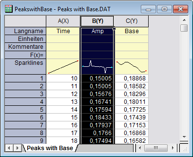
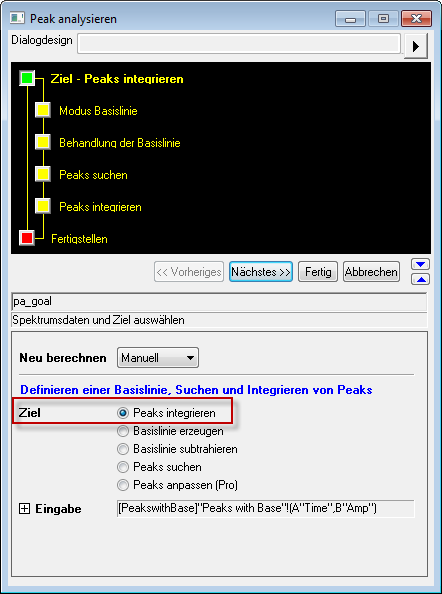
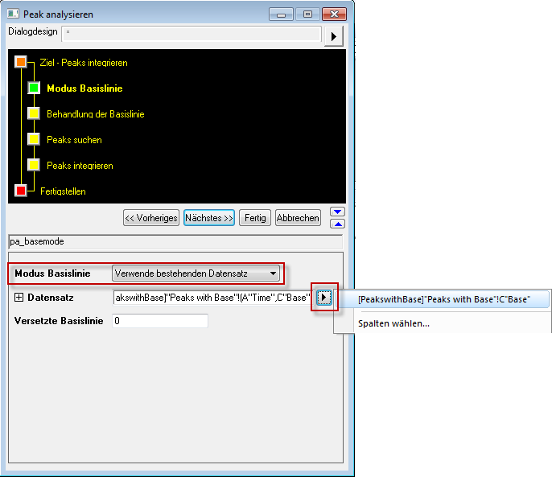
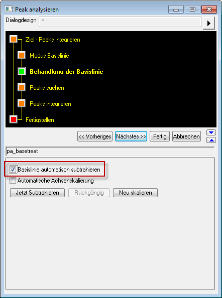
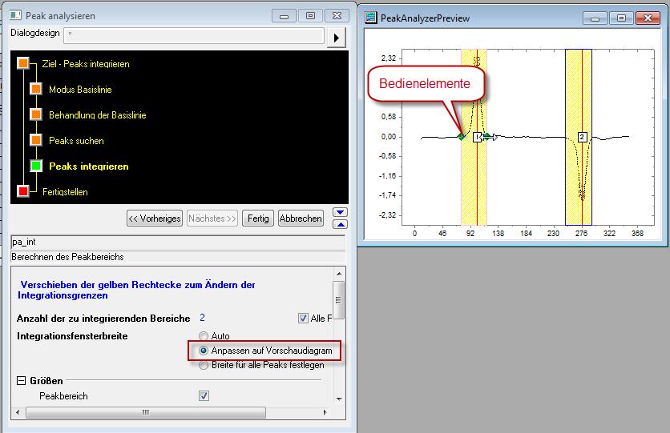
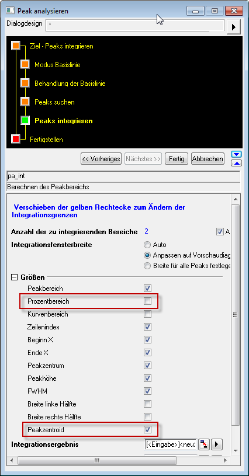
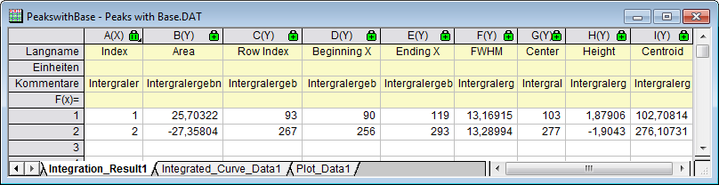

Peaks integrieren
Integrate-Peaks
Zusammenfassung
Verwenden Sie den Dialog Peaks analysieren, um Peaks zu integrieren und ihre Bereiche zu suchen.
Origin-Version mind. erforderlich: 8.0 SR6
Was Sie lernen werden
- Einen vorhandenen Datensatz als Basislinie wählen
- Eine Basislinie aus den Spektrumsdaten subtrahieren
- Peakbereiche mit dem Dialog Peaks analysieren berechnen
Schritte
- Öffnen Sie eine neue Arbeitsmappe und importieren Sie die Datei \Samples\Spectroscopy\Peaks with Base.dat.
- Markieren Sie die zweite Spalte.

- Klicken Sie im Hauptmenü Analyse auf Peaks und Basislinie und dann auf Peaks analysieren.
- Wählen Sie auf der ersten Seite (der Seite Ziel) des Dialogs Peaks analysieren die Option Peaks integrieren in der Gruppe Ziel. Klicken Sie auf Nächstes, um zur Seite Modus Basislinie zu gelangen.

- Wählen Sie auf der Seite Modus Basislinie die Option Verwende bestehenden Datensatz in der Auswahlliste Modus Basislinie. Klicken Sie auf die dreieckige Schaltfläche rechts von der Auswahlliste Datensatz und wählen Sie [PeakswithBase]"Peaks with Base"!C"Base" im Ausklappmenü. Klicken Sie auf Nächstes, um zur Seite Behandlung der Basislinie zu gelangen.

- Aktivieren Sie das Kontrollkästchen Basislinie automatisch subtrahieren. Klicken Sie auf das Seitensymbol Peaks integrieren im oberen Bedienfeld (oder klicken Sie 2x auf Nächstes, um zur Seite Peaks integrieren zu gelangen). Im Vorschaudiagramm sehen Sie zwei nummerierte gelbe Rechtecke, die zwei mit den Standardeinstellungen gefundene Peaks darstellen.

- Wählen Sie für Integrationsfensterbreite die Option Anpassen auf Vorschaudiagramm. Klicken Sie auf dem Diagramm in das Rechteck, das mit 1 gekennzeichnet ist. Auf beiden Seiten des gelben Integrationsfensters werden ein Paar Bedienelemente angezeigt. Ziehen Sie an diesen Elementen, um den Bereich, für den die Integration durchgeführt werden soll, anzupassen. Klicken Sie in das mit 2 gekennzeichnete Rechteck und passen Sie den Integrationsbereich für den zweiten Peak an.

- Stellen Sie auf der Seite Peaks integrieren des Dialogs Peaks analysieren sicher, dass alle gewünschten zu berechnenden Eigenschaften in der Gruppe Größen ausgewählt sind. Wenn Sie zum Beispiel der Peakzentroid für jeden Peak berechnen möchten, aktivieren Sie das Kontrollkästchen Peakzentroid. Wenn Sie die Prozentbereiche nicht ausgeben möchten, deaktivieren Sie das Kontrollkästchen Prozentbereich. Wenn Sie fertig sind, klicken Sie auf Fertig, um die Analyse durchzuführen.

Das Ergebnis befindet sich in einem Arbeitsblatt mit dem Namen Integration_Result1.

Wenn das Kontrollkästchen Peakbereich in der Gruppe Größen aktiviert wurde, werden die Peakbereichsdaten in der Spalte Area des Ergebnisarbeitsblatts ausgegeben.